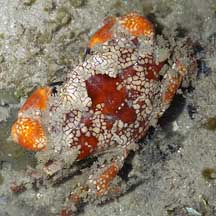
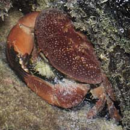

The Mosaic reef crab is the most poisonous crab on our shores.
Sentosa, Jun 07 |

Floral egg crab eating a fish.
Sentosa, Sep 04 |

A Red egg crab eating a sea urchin.
Tanah Merah, Jun 09 |
What do they eat? Most of these
crabs are said to be vegetarians, but at least one was seen chomping
happily on a fish.
Human uses: The study of the unique toxins in these crabs
may help develop new drugs or achieve better understanding of human
health.
Status and threats: Several of these crabs are listed
among the threatened animals of Singapore. Like
other creatures of the intertidal zone, they are affected by human
activities such as reclamation and pollution. Trampling by careless
visitors also have an impact on local populations. |
| Some Xanthid
crabs on Singapore shores |
Family
Xanthidae recorded for Singapore
from
Wee Y.C. and Peter K. L. Ng. 1994. A First Look at Biodiversity
in Singapore
in red are those listed among the threatened
animals of Singapore from Davison, G.W. H. and P. K. L. Ng
and Ho Hua Chew, 2008. The Singapore Red Data Book: Threatened
plants and animals of Singapore.
+from The Biodiversity of Singapore, Lee Kong Chian Natural History Museum.
**from WORMS
| |
Actea
sp. (Spiny-legged rock crabs)
Actaea alcocki=**Atergatopsis alcocki
Actaea amoyensis
Actaea depressa=**Forestiana depressa
Actaea fragifera
Actaea aff. ruppelloides
Actaea savignii
Actaea spongiosa
Actaeodes hirsutissimus
Actaeodes mutatus
Actaeodes tomentosus
Actites erythra=**Actiomera erythra?
+Actiomera erythra
Atergatis sp. (Egg crabs)
Atergatis dilatatus
Atergatis floridus
(Floral egg crab) (VU: Vulnerable)
Atergatis
integerrimus (Red egg crab) (VU:
Vulnerable)
Atergatis roseus
Atergatopsis alcocki
Atergatopsis tweediei
Atergatopsis bidentata
Banareia
armata
Banareia subglobosa (EN:
Endangered)
Chlorodiella bidentata
Chlorodiella nigra
Cymo sp.
(Hairy coral crabs)
Cymo andreossyi (Hairy coral
crab) (VU:Vulnerable)
Cymo melanodactylus
Demania baccalipes
Demania cultripes
Demania scaberrima
+Epiactaea cf. margaritifera
Epiactaea nodulosa
+Epixanthus dentatus
Etisus anaglyptus
Etisus laevimanus (Smooth spooner
crab)
Etisus utilis (Saw-edged spooner
crab)
Euxanthus exsculptus (Lumpy
rock crab)
Galliardellus orientalis=**Gaillardiellus orientalis
Galliardellus ruppelli=**Gaillardiellus rueppelli
Hypocolpus granulatus
+Hypocolpus aff. haani
+Hypocolpus pararugosus
Hypocolpus rugosus (CR:
Critically endangered)
Leptodius
sp. (Rock crabs)
+Leptodius davaoensis
Leptodius exaratus
Leptodius gracilis
Leptodius nigromaculatus
Leptodius sanguineus
Leptodius scaber
+Liomera bella
Liomera margaritata
Liomera pallida
Liomera venosa (Ruby reef crab)
Lophozozymus leucomanus
Lophozozymus pictor
(Mosaic reef crab) (EN: Endangered)
Macromedaeus distinguendus
Medaeops granulosus
Neoxanthops lineatus (EN: Endangered)
Novactaea bella (EN: Endangered)
Palapedia valentini (VU: Vulnerable)
Paractaea rufopunctata
Pilodius sp.
(Pilodius rock crabs)
Pilodius harmsi
Pilodius luomi=**Pilodius miersi
Pilodius nigrocrinitus
Pilodius pilumnoides
Platypodia cristata
Platypodia granulosa
(Curry puff crab) (EN:
Endangered)
Zalasius horii (Paddington Bear crab)
(CR: Critcially Endangered) |
|
Links
- Poisonous
Xanthid Crabs, Liomera,
Pilodius,
Common
Rock Crab (Leptodius), Actaeodes
mutatus, Red
Egg Crab (Atergatis integerrimus) Tan, Leo W. H. &
Ng, Peter K. L., 1988. A
Guide to Seashore Life. The Singapore Science Centre,
Singapore. 160 pp.
- Tetrodotoxin
...an ancient alkaloid from the sea by Jim Johnson on Molecule
of the Month of the School of Chemistry, University of Bristol
website: lots of details about the toxin's effects, creatures
that carry it and how it came about, with LOTS of links to more
about tetrodotoxin.
References
- Ng, Peter
K. L. and Daniele Guinot and Peter J. F. Davie, 2008. Systema
Brachyurorum: Part 1. An annotated checklist of extant Brachyuran
crabs of the world. The Raffles Bulletin of Zoology. Supplement
No. 17, 31 Jan 2008. 286 pp.
- Lim, S.,
P. Ng, L. Tan, & W. Y. Chin, 1994. Rhythm of the Sea: The Life
and Times of Labrador Beach. Division of Biology, School of
Science, Nanyang Technological University & Department of Zoology,
the National University of Singapore. 160 pp.
- Gopalakrishnakone
P., 1990. A
Colour Guide to Dangerous Animals.
Venom & Toxin Research Group, Faculty of Medicine, National
University of Singapore. 156 pp.
- Davison,
G.W. H. and P. K. L. Ng and Ho Hua Chew, 2008. The Singapore
Red Data Book: Threatened plants and animals of Singapore.
Nature Society (Singapore). 285 pp.
- Wee Y.C.
and Peter K. L. Ng. 1994. A First Look at Biodiversity in Singapore.
National Council on the Environment. 163pp.
- Jones Diana
S. and Gary J. Morgan, 2002. A Field Guide to Crustaceans of
Australian Waters. Reed New Holland. 224 pp.
- Debelius,
Helmut, 2001. Crustacea
Guide of the World: Atlantic Ocean, Indian Ocean, Pacific Ocean
IKAN-Unterwasserachiv, Frankfurt. 321 pp.
- Gosliner,
Terrence M., David W. Behrens and Gary C. Williams. 1996. Coral
Reef Animals of the Indo-Pacific: Animal life from Africa to Hawai’'i
exclusive of the vertebrates
Sea Challengers. 314pp.
|
|
|